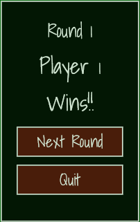

Introduction
Hello, and welcome to NIM! This is a 2 player turn based game. This is a computerised version of the classic strategy game which is said to have originated in China.Gameplay
During each turn, each player needs to remove at least one toothpick from only one row, being the "active row" (other rows will be "locked"). In order to remove toothpick the player must click (tap on mobile devices) on the toothpick of choice, making the toothpick disappear.Once the player decides not to remove any more toothpicks (or when no more toothpicks remain in the active row), the player clicks on the "End Turn" button.
Objective
The player who removes the last toothpick from the board wins.Note that this is version is based on "normal play" and not the misère version (during misère play, the winner is the player who ends up with the last toothpick).
Game Modes
There are 2 main play modes - 1 Player Game and 2 Player Game.The 2 Player Game mode is designed to be played in turns with another player on the same device. Who will become the NIM champion?? üèÜ
The 1 Player Game mode is played against the computer. When this mode is selected you need to choose the skill level, in order of difficulty - from Easy to Impossible.
Rounds
Either play mode enables the player to choose the number of rounds (1, 3, 5 or 7 rounds) per game.At the end of the last round, the player with most round winnings is declared the winner of the game and the match will be over.
At the end of each round a pop-up window will appear with the winner of the round/ match and you can select whether you would like to play another round or quit to Main Menu (once the match is over, you have the choice of playing the game again without going to Main Menu).

Other Info
Please note that you can return to the Main Menu at any point in the game.Just click on "Main Menu" during a match.
You then have the choice of reading these instructions again, play a new match, selecting another game mode, or you can always continue the existing game by selecting "Continue".